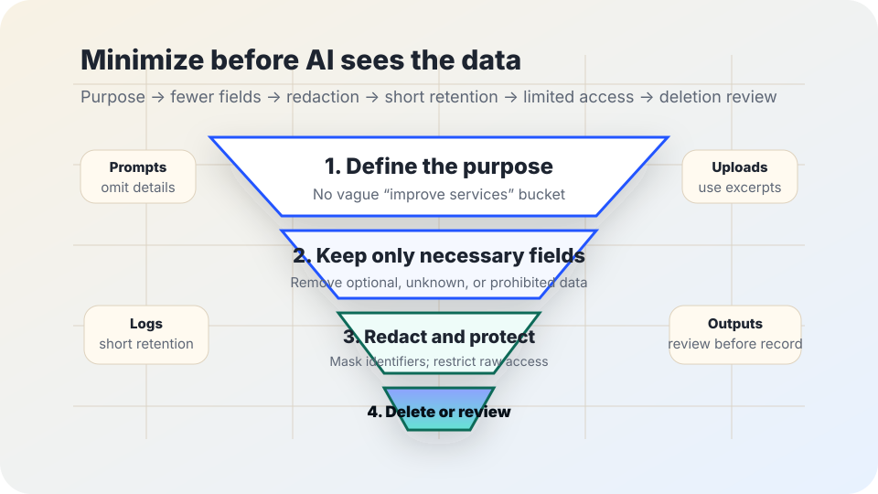

AI privacy basics
AI data minimization checklist.
Before adding AI to a service, classroom, workplace, or civic workflow, use this checklist to ask: what data can we avoid collecting, shorten, mask, separate, delete, or keep out of the tool entirely?
The short answer
Data minimization means using only the personal data that is necessary for a specific, legitimate purpose — and keeping it no longer than needed. In AI work, that usually means reducing inputs, prompts, training sets, logs, exports, vendor access, and retained outputs before privacy risk becomes normal workflow.
This is not a promise that any AI use is automatically lawful or safe. It is a practical risk-reduction habit: collect less, expose less, retain less, and make exceptions visible.

Why it matters for AI
AI systems can make privacy risk easier to miss because prompts, documents, logs, embeddings, outputs, evaluation sets, vendor dashboards, and copied examples may all contain personal data. A team may think it is “just testing” while sensitive information is already leaving the original context.
The NIST Privacy Framework describes privacy risk management through functions such as identifying, governing, controlling, communicating, and protecting data processing. The ICO data minimisation guidance explains that personal data should be adequate, relevant, and limited to what is necessary. The NIST AI Risk Management Framework emphasizes mapping context, governance, measurement, management, documentation, and accountability. OMB M-24-10 directs U.S. federal agencies to strengthen AI governance and risk management, especially where rights or safety may be affected.
Use this as public-interest guidance, not legal advice. Privacy duties vary by jurisdiction, sector, role, contract, age of users, and whether the workflow affects rights, safety, benefits, employment, education, health, housing, or public services.
First-pass checklist
- □ Write the exact purpose in one sentence before choosing fields, prompts, vendors, or models.
- □ List every personal-data field the workflow would collect, paste, upload, infer, store, or send to a vendor.
- □ Mark each field as necessary, optional, unknown, or prohibited for this purpose.
- □ Remove fields marked optional, unknown, or prohibited before the AI tool sees the data.
- □ Redact direct identifiers when the task can be done without them.
- □ Set a retention period for prompts, logs, uploads, outputs, exports, and evaluation examples.
- □ Limit who can access raw inputs, generated outputs, logs, and vendor dashboards.
- □ Record the owner who can approve exceptions, pause the workflow, and delete data.
Where to minimize
| Workflow point | Question to ask | Safer default |
|---|---|---|
| Input data | Does the AI need names, IDs, addresses, dates of birth, account numbers, grades, diagnoses, or full documents? | Use the smallest field set. Replace direct identifiers with role, case type, or coded labels when possible. |
| Prompts | Are staff pasting personal details into a model because it is convenient? | Create approved prompt patterns that say what to omit, redact, or summarize first. |
| Uploads | Can the task be done with an excerpt instead of the full file? | Upload only the necessary section. Remove hidden metadata when practical. |
| Outputs | Will the generated text create new sensitive records or inferences about a person? | Label AI-assisted output, review it, and avoid storing speculative or unnecessary inferences. |
| Logs and analytics | Who can see prompts, outputs, timestamps, user IDs, error reports, and usage dashboards? | Turn off unnecessary logging, shorten retention, and restrict access by role. |
| Training or tuning | Will local records be reused to train, tune, benchmark, or demonstrate the system? | Do not reuse personal data for a new purpose without governance, notice, and a lawful basis where required. |
| Vendor sharing | What does the vendor receive, retain, use for service improvement, or expose to subcontractors? | Prefer settings and contracts that prohibit training on customer data, limit retention, and document deletion. |
Practical minimization patterns
Purpose lock
Name the exact task before collecting data: “summarize these meeting action items” is safer than “improve operations.”
Field diet
Start with no personal fields, then add only what the task cannot work without. Document why each field is needed.
Redaction pass
Remove names, account numbers, contact details, precise locations, and sensitive details unless they are necessary for the task.
Retention clock
Decide when prompts, uploads, logs, and outputs expire. “Keep forever unless someone cleans it” is not a minimization plan.
Access boundary
Give raw data access only to roles that need it. Do not let a shared AI account become a shared privacy loophole.
Exception log
When more data is needed, record why, who approved it, when it will be reviewed, and how deletion will be confirmed.
Bad signs
- Warning: The workflow starts by uploading whole files before deciding which parts are needed.
- Warning: Staff are told “do not paste sensitive data” but receive no examples, safer prompts, or approved alternatives.
- Warning: Vendor settings, contracts, or documentation do not clearly say what happens to prompts, uploads, logs, and outputs.
- Warning: AI outputs create new permanent records even when the output was only a draft, brainstorm, or triage aid.
- Warning: Nobody can name the data owner, deletion path, retention period, or exception approver.
- Warning: A tool built for low-stakes drafting quietly becomes part of eligibility, discipline, benefits, employment, housing, health, or safety decisions.
Starter policy language
Copy and adapt: “For AI-assisted work, we use the minimum personal data needed for the approved purpose. Staff must remove unnecessary personal details before using an AI tool, may not upload prohibited or sensitive data unless an approved exception applies, and must follow the retention, access, and deletion rules for prompts, uploads, outputs, logs, and exported files. The workflow owner reviews exceptions and can pause or delete the workflow when minimization fails.”
Replace “approved purpose,” “prohibited or sensitive data,” “retention,” “access,” “deletion,” and “workflow owner” with local details. If those details do not exist yet, build them before deployment.
Sources and further reading
- NIST — Privacy Framework.
- UK Information Commissioner’s Office — Data minimisation.
- NIST — AI Risk Management Framework.
- NIST — Artificial Intelligence Risk Management Framework (AI RMF 1.0).
- U.S. Office of Management and Budget — M-24-10: Advancing Governance, Innovation, and Risk Management for Agency Use of Artificial Intelligence.
- W3C — Web Content Accessibility Guidelines (WCAG) 2.2.